线性表
顺序存储结构
顺序结构优点
顺序结构缺点：
稀疏空间浪费
增删慢
向量
向量是线性数组的一种抽象与泛化，它是具有线性次序的一组元素构成的集合V={\(v_1,v_2,...,v_n\)}，其中的元素分别由秩相互区分。可以有多种实现方式。
ADT：
size()
get(r)
put(r,e)
insert(r,e)
remove(r)
disordered()#是否按非降序排列
sort()#按非降序排列
find(e)#查找等于e且秩最大的元素
图
基本概念
图表示多对多的关系。
基本元素包括顶点，和边。
一个图包含V={\(v_1,v_2,...\)}和E={\(e_1,e_2,...\)}
连通:如果从V到W存在一条(无向)路径，则称 V和W是连通的
路径:V到W的路径是一系列顶点{V, v1, v2, ..., vn, W}的集合，其中任一对相邻的顶点间都有图
中的边。路径的长度是路径中的边数(如果带权，则是所有边的权重和)。如果V到W之间的所
有顶点都不同，则称简单路径。
回路:起点等于终点的路径（回路指的是路径）
连通图:图中任意两顶点均连通
连通分量:无向图的极大连通子图
极大联通子图
- 极大顶点数:再加1个顶点就不连通了
- 极大边数:包含子图中所有顶点相连的所有边
强连通:有向图中顶点V和W之间存在双向路 径，则称V和W是强连通的
强连通图:有向图中任意两顶点均强连通
强连通分量:有向图的极大强连通子图
图的存储
两种方法：
邻接矩阵：直接用二维矩阵存储。
优点：
- 简单，容易理解。
- 方便检查两个点之间是否有边。
- 方便找出任意顶点的“邻接点”（有边直接相连的点）。
- 方便计算任一顶点的“度”(从该点发出的边数为“出度”，指向该点的边数为“入度”)
缺点：
- 存稀疏图比较浪费空间。
- 统计边数比较浪费时间。
邻接表
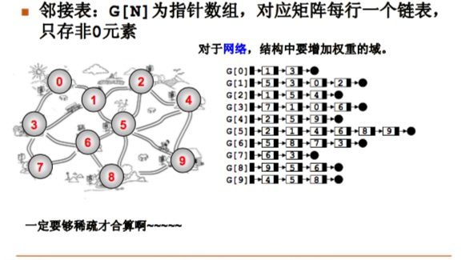
优点：
- 方便计算出度。
- 方便查找“邻接点”。
- 节约稀疏图的存储空间，需要V个头指针和2E个节点。
- 方便计算某一顶点的度（有向图需要逆邻接表）
缺点：
- 判断两个节点之间是否有边变麻烦了。
图的遍历
深度优先遍历
Depth First Search
时间复杂度为：
邻接表：\(O(N+E)\)
邻接矩阵：\(O(N^2)\)
只要不是太稠密都是邻接表快一些，根本就是邻接表快一些！！因为E最大等于n（n-1）/2
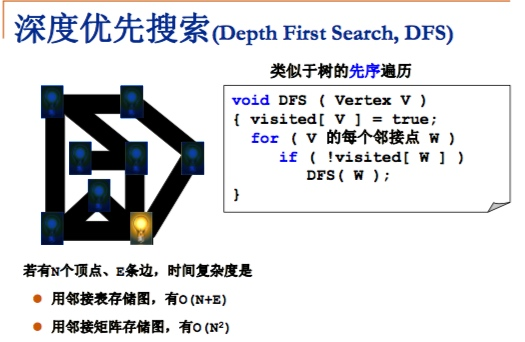
常用DFS来扫描极大连通分量。
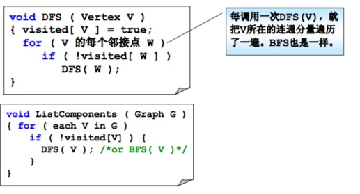
广度优先算法
Breadth First Search
复杂度和深度优先一样。
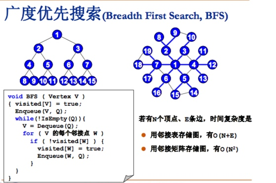
广度优先遍历
Dijkstra算法
用于计算有权图的单源最短路径。

假设的证明：
v是马上要收录的顶点，如果存在未包含的顶点w，使s-w-v距离小于s-v，那么|s-w|<|s-v|,那么s-w应早于s-v收录。
收集顶点应按权值升序收集。
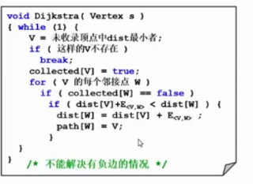
说明，dist数组用来存储源s到v的最短路径，path则是上一个节点的索引值。
所谓收录其实是未收录节点的反。
根据收集最小权值顶点和距离更新方法的不同算法复杂度不同。
主要是未收录的如何存储，未收录的可以用任何线性结构，存储存在距离的节点，动态添加和删除。
- 直接扫描收集：T=\(O(|V|^2+|E|)\),对于稠密图效果更好。
把dist存在最小堆里：\(O(\log(|E|\log|V|))\)，对于稀疏图效果更好（充分稀疏，边与顶点同数量级）。
对于稀疏矩阵，可以直接用dijkstra算法计算多源最短路径（稀疏矩阵用线性结构存储未收集表）
Floyd算法
初始距离矩阵是邻接矩阵。
直接在邻接矩阵上迭代。


这个可以画图看下，用那个推论就比较容易理解了。
Prime算法
是一个最小生成树算法，小树长大，跟Dijkstra比较像，都是一个一个收率。例子的话就是修路问题。
查找dist最小时用数组，因为这个算法在稠密图中比较有效。
复杂度\(O(|V|^2)\)

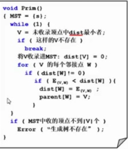
Kruskal算法
也是一个最小生成树算法，把森林合成树。每个节点都作为一个树，贪婪合并树直到边数到|V|-1或是边用完了。
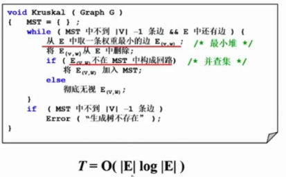
复杂度T=\(O(|E|log|E|)\),当稀疏时效率高于Prime
拓扑排序
AOV：Activity On Vertex，指活动在顶点上表示的图。
拓扑序：如果图中从V到W有一条有向路径，则V一定排在W之前。满足此条件的顶点序列称为一个拓扑序。
拓扑排序：获得一个拓扑序的过程。
DAG：有向无环图 Directed Acyclic Graph。
AOV一定是DAG
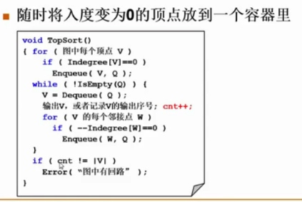
就是不断把入度为0的节点提出来并删除这个节点指向其他节点的边（优化是记录入度，如果目标节点入度减至0就把那个节点扔到下次迭代要提出的队列里去）。迭代至队列里没顶点，如果没pop出|V|个节点，那就是有回路。
复杂度是\(O(|V|+|E|)\)
排序
冒泡排序
冒牌排序尾部迭代N次后尾部N个不需要再排了。
最好O（N）
最差O（\(N^2\)）
优点是简单，可以排单链表。是稳定的。
插入排序
计算过程复用了原来的数组
最好O（N）
最差O（\(N^2\)）
优点是简单，步骤比较省，更好的性质后边说，也是稳定的。
希尔排序
使用递减级数抽取子数列做插入排序，使用不同增量数列效果不同。同样比较简单,不稳定。
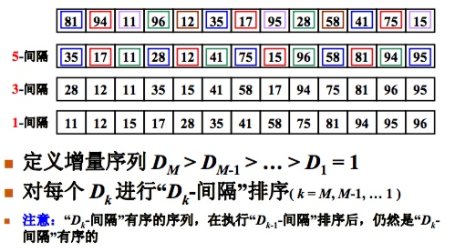
堆排序
两种实现：
- 从最小堆里一个一个Pop出来。需要额外O（N）空间。复制元素需要时间。
- 重复调整最大堆，把堆顶元素与末尾元素调换位置，减少规模，迭代下去~。这里的堆排序索引需要特殊处理，下表计算与堆章节下表计算公式不同，考试的时候画一下。

快速排序
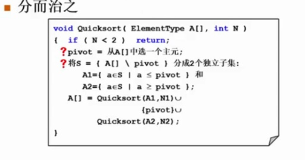
- 将[head,(head+tail)/2,tail]升序排列
- swap（(head+tail)/2,tail-1）
- 使用两个指针对[head:tail-2]遍历swap
- 把tail-1插到左侧出发指针所在位置i
- 对i两侧区间递归排序
基数排序
就是把要排序的值分桶，有不同的分桶方法，对于多位的值还有不同的顺序（后序优点&&先序优先）

多关键字就再来一次分桶收集。
归并排序

归并，O（N ）
O（NlogN），非常稳定，最好最坏一样。稳定的。非常适合外排序中。
分为递归实现和非递归实现。因为占用空间较大，一般不用于内排序。
这个非递归实现回头画图看下
排序总结
| 排序方法 | 平均时间复杂度 | 最坏时间复杂度 | 额外空间复杂度 | 稳定性 | 特点 |
|---|---|---|---|---|---|
| 选择排序 | \(O(N^2)\) | \(O(N^2)\) | O(1) | 不稳定 | |
| 冒泡排序 | \(O(N^2)\) | \(O(N^2)\) | O(1) | 稳定 | |
| 插入排序 | \(O(N^2)\) | \(O(N^2)\) | O(1) | 稳定 | |
| 希尔排序 | \(O(N^d)\) | \(O(N^2)\) | O(1) | 不稳定 | |
| 堆排序 | \(O(N_{log}N)\) | \(O(N_{log}N)\) | O(1) | 不稳定 | 常数比较大 |
| 快速排序 | \(O(N_{log}N)\) | \(O(N^2)\) | O(logN) | 不稳定 | 常数比较小，需要额外空间 |
| 归并排序 | \(O(N_{log}N)\) | \(O(N_{log}N)\) | O(N) | 稳定 | 占用空间大， |
| 基数排序 | \(O(P(N+B))\) | \(O(P(N+B))\) | O(N+B) | 稳定 | 速度看桶，场景有限 |
P是多少次，B是多少个桶
归并排序是复杂排序算法中唯一一个稳定的。
选择排序是简单排序算法中唯一一个不稳定的。
冒泡排序可以用于单链表。
堆排序常数比较大。
快速排序常数比较小，非常快。
基数排序比较适合容易分桶的
散列
成功平均查找长度：ASLs
要查找的对象在表里。
失败平均查找长度：ASLu
要查找的对象不在表里。

散列冲突处理方法
开放地址法
发现冲突时按某种规则放到其他位置上。
发生第i词冲突时，试探下一个地址增加\(d_i\),基本公式是：\(h_i(key)=(h(key)+d_i)\% TableSize,1\le i\lt TableSize\)
优点
散列表是一个数组，存储效率高，随机查找。
缺点
散列表有聚集现象
注意次数是从1开始的，判定没找到那个空也算次数里。
线性探测：
增量序列 1，2，3，4，5....
聚集问题比较严重
平方探测：
增量序列为：\(d_i=(-ceil(\frac{i}{2}))^{i-1}\)
就是 1，-1，4，-4，9，-9，...
有效避免了聚集问题，但如果TableSize没有设好容易出现探测不到闲置空间的情况。
定理：如果散列表长度是某个4k+3形式的素数时，平方探测法可以谈查到整个散列表空间
双散列探测法：
\(d_i\)是\(i*h_2(key),h_2(key)\)是另一散列函数
探测序列成：\(h_2(key),2h_2(key),3h_2(key),...\)
对任意key，\(h_2(key)\ne 0\)

再散列
装填因子过大时，查找效率会下降，实用装填因子一般取0.5~0.85，超过超过0.5过多时一般要扩大散列表，新建一个更大的表（还是素数长度），把原来表里的东西都丢进去。
链地址法
就是value不是元素而是元素链表啦。
优点：
容易实现，关键字删除不需要懒惰删除法没有存储垃圾。
缺点：
* 链表部分存储效率和查找效率都比较低。
* \(\alpha\)小的时间代价高，大则可能导致空间浪费，不均匀的链表长度导致时间效率的严重下降。
性能分析
关键词的比较次数，取决于产生冲突的多少。
映像产生冲突多少有以下三个元素：
- 散列函数是否均匀
- 处理冲突的方法
- 散列表的 装填因子\(\alpha\)
线性探测法

平方探测法和双散列法
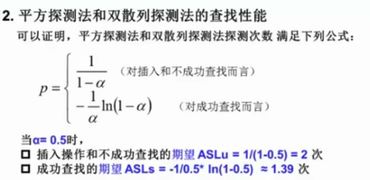
分离链表法
特点：
散列表是顺序存储和

散列查找的特点
优点：
散列的查找效率期望为常数O(1)，几乎与大小无关。适合关键字直接比较量大的问题，常用于字符串管理。
特点：
以较小的\(\alpha\)为前提，空间换时间。
缺点：
散列方法的存储对关键字是随机的，不便于顺序查找关键字，也不适合于范围查找，或最大值最小值查找。